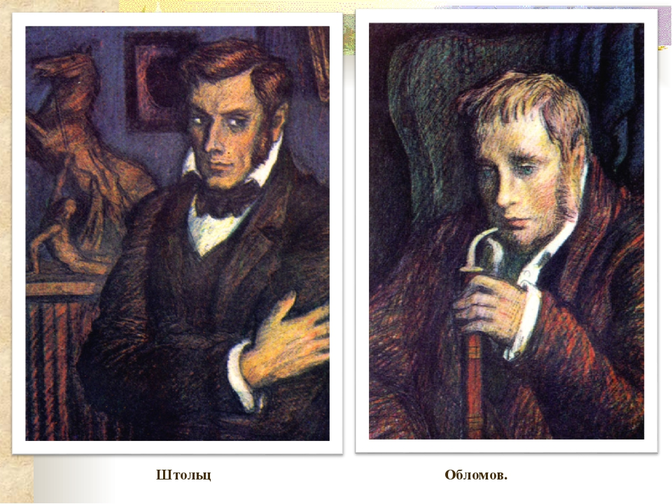

Немного информации
Игра создана из-за любви к литературе.
© Создатели предпочитают остаться в неизвестности
Ученики школы 1534
Создатели не очень дружили с русским языком
Краткое содержание
Обломов - главный герой. Жил себе спокойно, пока не пришёл этот суетной Штольц. Из-за него он влюбился в Ольгу. После он не смог оправдать её надежд. Поэтому он снова стал жить спокойно и нашёл себе натоящую жену-хозяюшку. Потом умер.
Вы думаете что это самое краткое содержание. Хах вы глубоко ошибаетесь. Самое краткое содержание дал сам Иван Обломов, и оно состоит из одного слова: Обломовщина
Сюжет
Мы представляем вашему вниманию компьютерную игру с небывалой графикой и великолепным исполнением для нашего времени: «Обломов и Штольц».
Игра основана на конфликте двух персонажей: Обломова и Штольца.

Обломов:
С самого начала игры Иван Обломов находится в кровати – это его место возрождения. Он должен открывать ящики (двадцать штук), разбросанные по карте – его квартире. В них могут лежать теплое одеяло и снотворные таблетки с пятьюдесятью - процентной вероятностью, могут лежать гантели с тридцатью пятью - процентной вероятностью, могут лежать пять тысяч рублей с десяти - процентной вероятностью и может лежать путевка в теплые страны с пятью – процентной вероятностью. Изначально у Обломова имеется ноль очков удовлетворенности и сто очков здоровья. При находке теплого одеяла и снотворного удовлетворенность повышается на десять очков, но здоровье падает на пятнадцать очков, при находке гантелей здоровье повышается на тридцать очков, но удовлетворенность снижается на двадцать очков, при находке денег удовлетворенность повышается на восемьдесят очков, а шкала здоровья остается на прежнем уровне, при находке путевки здоровье повышается на восемьдесят очков, а удовлетворенность повышается на пятьдесят очков.
| Одеяло и снотворное | Гантели | Деньги | Путевка | |
| Вероятность | 50% | 35% | 10% | 5% |
| Удовлетворенность | +10 | -30 | +80 | +50 |
| Здоровье | -15 | +30 | 0 | +80 |
Цель Обломова - собрать сто очков (можно и больше) удовлетворенности, при этом не потеряв все здоровье.
Преимущества Обломова:
1) Помощник (слуга Захар приносит на карту по одному ящику за три хода).
2) Еда (Агафья готовит Обломову говядину каждые пять ходов, тем самым повышая удовлетворенность на десять очков)
3) Любовь (один раз за игру (по желанию игрока) Ольга Ильинская прибавляет пятьдесят очков удовлетворенности)
Недостатки Обломова:
1) Лень (первые два хода Обломов не может двигаться).
2) Медлительность (за один ход может открыть одну коробку)
3) Не внимательность (каждые десять ходов Тарантьев забирает по двадцать очков удовлетворенности)
Штольц:
С самого начала игры Андрей находится в Англии – это его место возрождения. Балы и маскарады Знакомство с людьми Поездка в другую страну
| Балы и маскарады | Знакомство с людьми | Поездка в другую страну | Одинокий вечер | |
| Популярность | +30 | +10 | 0 | -5 |
| Карьерный рост | +10 | +20 | +40 | 0 |
| Желание поехать к Обломову | +40 | +20 | +40 | +5 |
Каждый ход Андрей делает выбор между балом и маскарадом, знакомством с людьми, поездкой в другую страну и посещением Обломова. Когда желание поехать к Обломову превышает или равняется ста очкам, Штольц едет к Ивану, при этом теряя тридцать очков популярности и карьерного роста (это не считается за ход).
Цель Штольца: накопить сто очков (можно и больше) популярности и карьерного роста.
Преимущества:
1) Умение планировать свое время (может сделать два действия за один ход)
2) Труд (Андрей работает без остановки, следовательно +10 к карьерному росту каждые два хода)
3) Терпеливость (Андрей спокойно разговаривает и не повышает голос(от Отца и Матери), следовательно +3 к познанию мира каждые два хода)
Недостатки Штольца:
1) Уходит в себя (последнии два хода Штольц не может двигаться).
2) Слишком правильный (-30 к популярности каждые 5 ходов)
3) Не видит конечной цели (Желание поехать к Обломову +10 каждые 3 хода)
Процесс игры:
В начале игры игроки случайным образом выбирают, кто будет играть за Обломова, а кто за Штольца. Далее, начиная с Обломова, игроки ходят по очереди, до тех пор, пока кто-то не победит, то есть выполнит задание своего персонажа.
Игрушка
Кликай